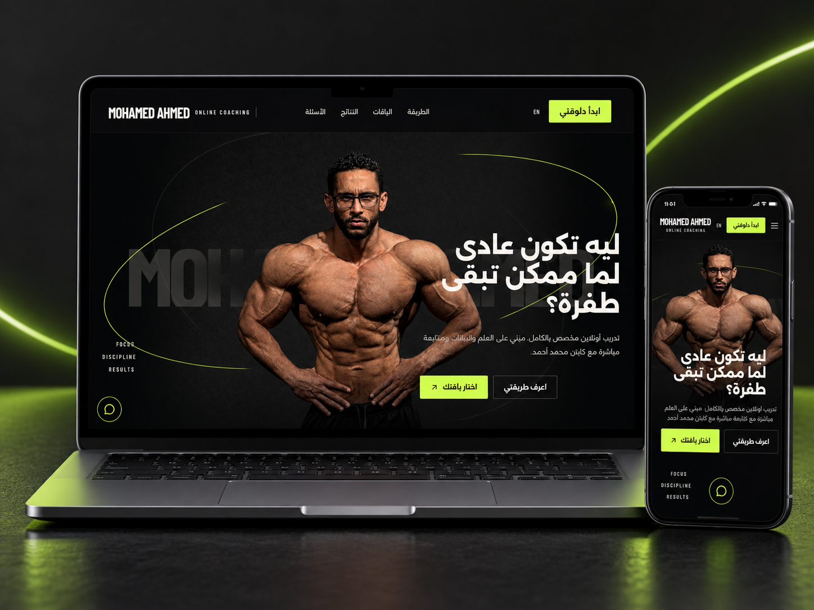

01 — Full-stack product
Mohamed Ahmed
Online Coaching Platform
A bilingual coaching platform and private operations system that manages the complete client journey: regional pricing, payment review, detailed intake, program delivery and subscription tracking.
- Role
- Product design, full-stack development & workflow architecture
- Stack
- Next.js · TypeScript · Supabase · PostgreSQL · Resend · Vercel